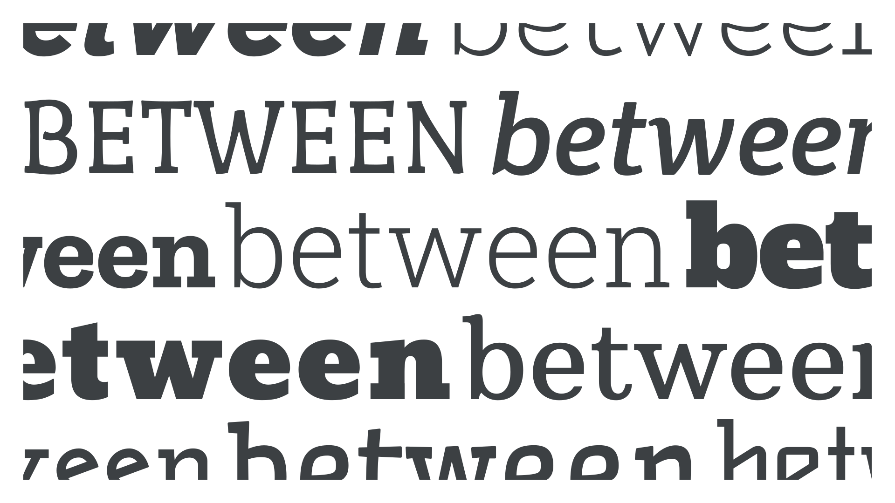

Slab serif, Egyptian, or Clarendon
By Google Fonts Knowledge contributors · Google Fonts Knowledge.
Original article · Source on GitHub · CC BY-SA 4.0. Text, illustrations and existing credits reproduced from the licensed Knowledge repository. Open Shelf adapted the layout and links; these adaptations are also CC BY-SA 4.0. No endorsement implied.
Slab serif—also called Egyptian, Clarendon, or simply “slab”—is a group of typefaces close to sans serifs in their construction, including their generally low stroke contrast, but possessing serifs that match the overall stroke.

“Slab Serif” walks an interesting line between being another historical classification and a wider genre of typefaces, arguably on par with both serif and sans serif. And don’t be fooled by its name: Most slabs are closer to sans serifs than serifs, usually with a relatively monolinear or unmodulated stroke. In superfamilies that contain serifs, sans serifs, and slab serifs, you’ll often notice that the skeletal structure of the sans and slab is far closer.
The sub-genre of Clarendons is perhaps an exception, where there’s a smoother flow from the letterforms into the slabs themselves, and more overall contrast in the strokes.
There are many sub-genres of slab serif type. For a detailed look at classifications broken down by genre and historical period, please read our article: “Making sense of typographic classifications”.
Examples of slab serif typefaces include Roboto Slab, Crete Round, Ultra, and Josefin Slab.